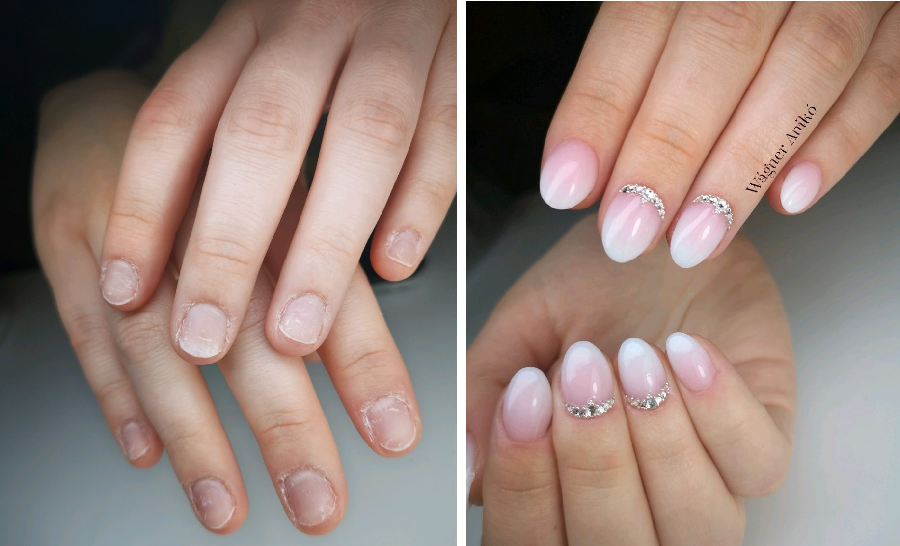
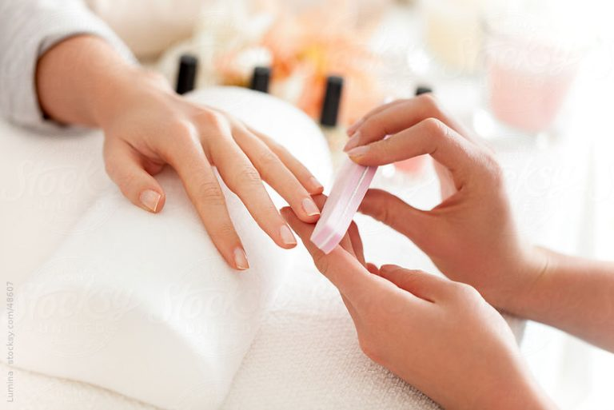
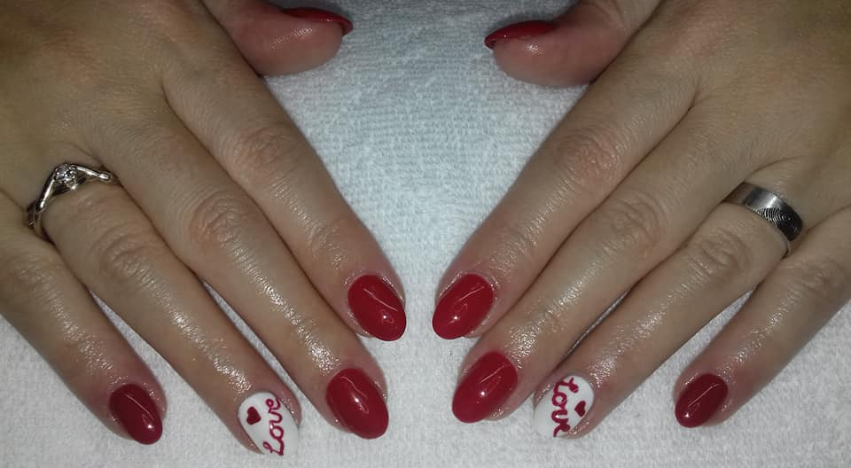
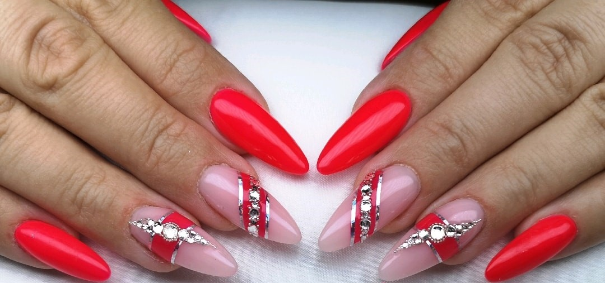

Pótlás vagy javítás szolgáltatásom arra alakítottam ki, hogy ha csak egy körmöt kell pótolni, javítani, legyen az saját vagy műkörmöd sérülése, letörése, beszakadása. A szolgáltatás egy köröm letörésére ad lehetősége. Amennyiben több körmöt kell javítani, kérlek tudasd velem mindenképp.

A gépi manikűr szolgáltatást mind nők, mind férfiak számára egyaránt ajánlom.
Gépi manikűr szolgáltatás során feltolom a körömre tapadt bőrt, csiszológép használatával eltávolítom a köröm felületéről a makacsabb bőrt, majd ollóval levágom a felesleges elhalt bőrdarabkákat. A körmöt a manikűr szolgáltatás megkezdésekor előre egyeztetett hosszra és formára reszelem. A köröm felületét kívánságod szerint finoman megcsiszolom az egyenetlenségek eltüntetéséhez. A körmöd felületét kérheted mattra vagy fényesre polírozva. A szolgáltatás befejezéseként bőrápoló olajjal bekenem a bőrfelületet. A szolgáltatás ideje maximum 30 perc.
Hogy körmeid mindig szépek és ápoltak legyenek a gépi manikűr szolgáltatást 2 hetente érdemes igénybe venni.

A gépi manikűr és az előző erősített gél lakk eltávolítását követően egy erősített gél lakkozást készítek neked. Készíthetek neked egyszínű, francia, ombre vagy akár babyboomer körmöket is. színes géllakkokból, illetve hatásokból (mágneses, csillámos, sötétben foszforeszkáló, plüsshatású) választhatsz.
Amennyiben bonyolult mintát találtál sok diszítéssel, kérlek a bejentkezés során jelezd nekem, hogy a megfelelő időt tudjam biztosítani neked.

A saját körmök hosszát a műköröm építés technikájával lehet meghosszabbítani. Ha jelenleg nincs műkörmöd és hosszabb körmöket szeretnél, válaszd műköröm szolgáltatásom.
A műkörmöket sablonos technikával készítem, így a megépített köröm pontosan illeszkedni fog a saját körmödhöz. Hossza tetszés szerint bármekkora lehet S és XXL méretek között. A minta választást teljes mértékig rád bízom! Tehetek rá neked (a teljesség igénye nélkül) köveket, csillámport, sellőport... körmöd díszítésének csak a képzeleted szabhat határt.
Bejelentkezés során kérlek add meg, hogy milyen hosszú körmöt szeretnél, és milyen mintával, hogy a megfelelő időt tudjam neked biztosítani.